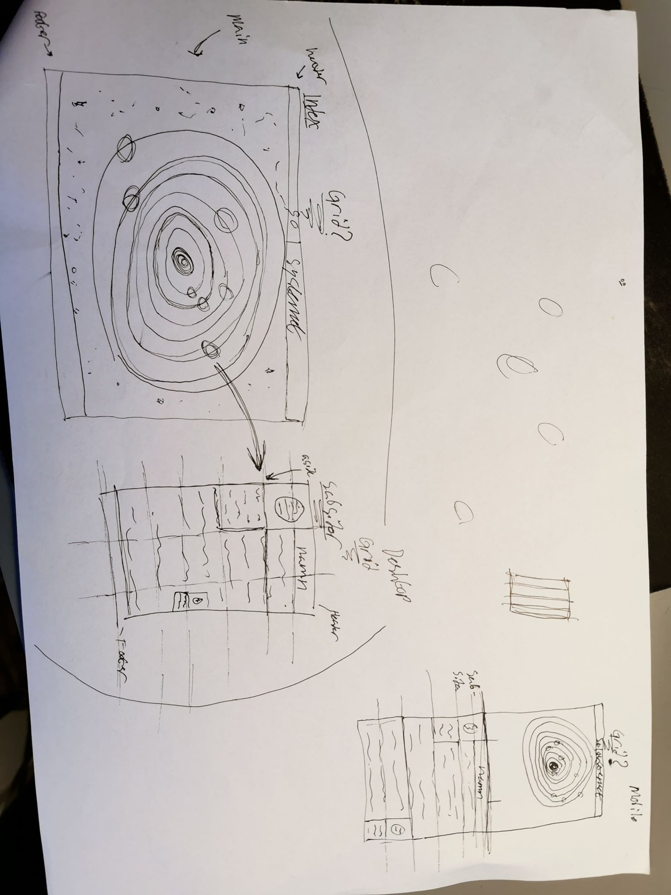

En hemsida som visar ett solsystem. Man ska kunna trycka på varje planet för att få fram info om den.
2. Planering
2.1 Handskiss

2.2 Schema
Vecka
På lektionen
Utanför lektionen
4
planera
Förhoppningsvis något
5
planera
6
koda lite, bilder.
7
8
Koda eller förbereda.
9
Kodning eller förberedelse.
10
Kodning
11
Kodning
12
Kodning
3. Dokumentation
Lektion vecka 4
Hade inget internet. Har försökt få idéer på vad min sida ska vara för något. Jag brukar ha svårast att faktiskt starta med projekt så denna del tog mycket längre tid än jag skulle velat.
Lektion vecka 5
Hade inget internet. Har dragit upp en snabb skiss på hur jag vill att sidan ska se ut. Dock är jag inte ens riktigt säker vad min sida ska vara om.
Lektion vecka 6
Hade inget internet. Har ändrat mig om vad sidan skall handla om och hur den ska se ut.
Lektion vecka 8
Har internet nu. Har helt bestämt mig om dess utseende och är äntligen väldigt säker på hur den ska se ut och fungera med navigering osv. Har börjat förbereda, mest med photoshop, bilder och hur jag ska strukturera sidan i css.
Lektion vecka 9
Har lagt upp och länkat alla html dokument till css dokument som behövs, index till ett css och alla planeter till ett annat css. Har också tänkt över griden till sidorna och om animationer skulle behövas.
Lektion vecka 10
Har lagt in allt jag behöver för projektet och länkat allt jag behöver.
Lektion vecka 11
Har positionerat allt så det passar på laptop och tablet, samt länkat alla planeter till respektive html dokument.
Lektion vecka 12
Har gjort css:en och bas html:en till sidan, behöver fylla ut med text och sätta in bilder. Behöver också göra lite js till den så är den snart färdig.
4. Testning
Testning gick bra, det kom inga problem i något av css:et och jag försökte fixa de större felen för html:n som hittades (dock är jag inte helt säker på vad den vill att jag skulle ändra). Ett problem med valideringen var att den ville att jag skulle lägga länken till javascriptet i body:n, men när jag gjorde det så funkade inte scriptet, så jag slutade med att låta det vara utanför så att det faktiskt funkar. Har kollat på liveserver och tycker att resultatet är acceptabelt, ser ut som vid granskning av element, det stämmer överens med vad jag ville åstakomma. Det verkade se bra ut på olika webbläsare också.
5. Utvärdering
Jag blev ganska nöjd med resultatet, sidan ser fin ut. Dock har jag antagligen gjort onödiga saker i koden och liknande. Jag tyckte jag prokrastinerade lite mycket under de första veckorna, men på slutet jobbade jag väldigt effektivt. Javascriptet ville inte fungera för mig, som tur vad kunde jag fråga om hjälp från en familjemedlem som jobbar med liknande saker. Jag kunde jobbat bättre när det gäller mediaquery och liknande, då jag helt ärligt löste det på ett ganska lat sätt. Borde lagt mer tid på det tidigare.
Den borde var lättare använd på mobil därav det jag nämnde innan. Jag kanske också glömde kolla tillståndet på att använda vissa bilder. Jag gillade hur sidan såg ut då den verkligen passar med det temat som jag hade valt att göra sidan om. Jag insåg också att jag hade glömt PSD filerna för de bilder jag photoshoppat. Jag använde också två css filer, vilket jag inte vet om man kunde göra. Vet inte om det gör saker långsammare eller så, men fick inga instruktioner om det när jag frågade.